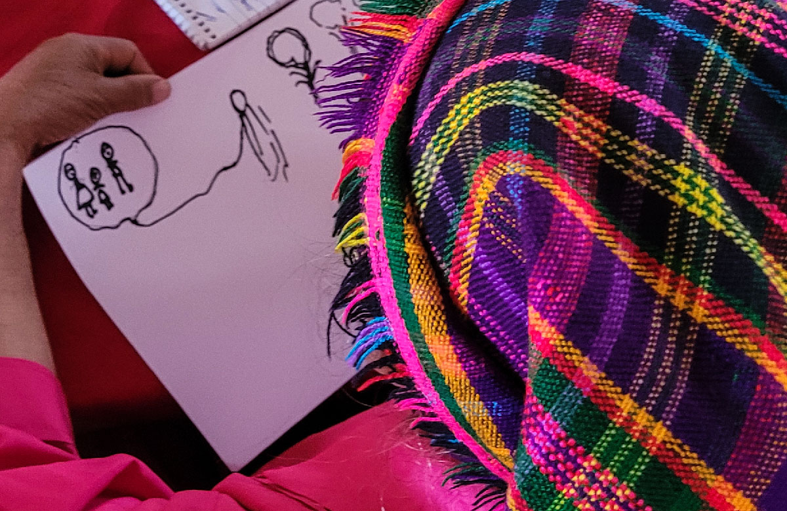

আদিবাসী জনগোষ্ঠী অধিকার ও উন্নয়ন জোট (আইপার্ড)
আইপার্ড একটি বিশ্বব্যাপী উন্নয়ন জোট যা আদিবাসীদের অধিকার সুরক্ষিত করতে, সক্ষমতা জোরদার করতে এবং অর্থনৈতিক স্ব-উন্নয়নকে অনুঘটক করার জন্য বহু-ক্ষেত্রের অংশীদারদের আহ্বান করে।
এটি জাতীয় আদিবাসী পরিষদ ( JAP ) দ্বারা বাস্তবায়িত হয় এবং এটি তৈরি করা হয়েছিল এবং বর্তমানে বেসরকারি খাতের অংশীদারদের সাথে মার্কিন যুক্তরাষ্ট্রের আন্তর্জাতিক উন্নয়ন সংস্থা ( USAID ) এবং বন তত্ত্বাবধায়ক পরিষদ ( FSC) দ্বারা অর্থায়ন করা হয়।

আদিবাসী নারীর অর্থনৈতিক ক্ষমতায়ন উদ্যোগ (আমি-আমরা)
আমি-আমরা হল একটি IPARD উদ্যোগ যার লক্ষ্য হল গুয়াতেমালা, হন্ডুরাস এবং এল সালভাদরের আদিবাসী নারী ও মেয়েদের অর্থনৈতিক ক্ষমতায়নকে উৎসাহিত করা, তাদের দক্ষতা ও ক্ষমতা জোরদার করা, তাদের সক্রিয় অংশগ্রহণ এবং সমর্থনের জন্য উপযুক্ত পরিবেশ তৈরি করা এবং আদিবাসী মহিলাদের নেতৃত্বে উৎপাদনশীল উদ্যোগগুলিকে শক্তিশালী করা।